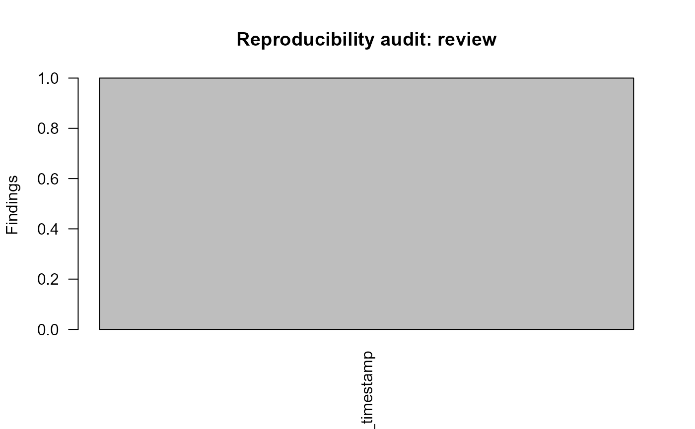

Reproducibility Hardening
Source:vignettes/reproducibility-hardening.Rmd
reproducibility-hardening.RmdDeterministic documentation mode
When gp3ml.reproducible_examples is TRUE,
report timestamps and session details use deterministic documentation
placeholders rather than build-session values. Research use outside
documentation retains the real runtime metadata.
volatile <- c(
paste0(
"Generated",
": 2026-07-25 23:26:03 UTC"
),
paste0(
"<environment: 0x",
"000001234ABCDEF0>"
)
)
normalize_gazepoint_artifact_text(volatile)
#> [1] "Generated: <timestamp> UTC" "<environment: <ADDRESS>>"Audit generated text
example_file <- tempfile(fileext = ".md")
writeLines(
paste0(
"Generated",
": 2026-07-25 23:26:03 UTC"
),
example_file
)
audit <- audit_gazepoint_reproducibility(example_file)
audit
#> gp3ml reproducibility audit: review (1 files, 1 findings)
plot(audit)
unlink(example_file)Before publication, the same audit can be run over generated
docs/ output to identify runtime-specific paths, addresses,
or generated timestamps.